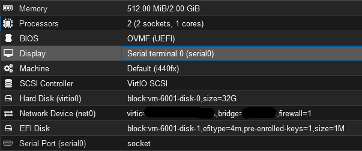

Serial Consoles in Proxmox VMs
The Why
Serial consoles are a very efficient and very flexible way of accessing the terminals of a Linux VM. They allow copy-paste directly into the terminal, access from the command line of the VM host itself, and can even be redirected to and from physical ports. I use them on all my Linux VMs, as I can simply pull up their terminals from inside the VM host if things go bad.

Note that there is a Serial Port and the default display is set to Serial Port 0
One of the most useful things I’ve found for it is copy-pasting things like SSH keys, text blocks, and other long and tedious things to type out manually. If I have access to the host, I can get the terminal, and I can diagnose any issues from there, like failure to boot, or DHCP grabbing a random address.
Debian/Ubuntu/Alpine
Following the tutorial here, you can set up the serial console, but that tutorial is over ten years old, so some things have changed since then. This is my setup, which works just fine.
/etc/default/grub - Relevant Excerpt
GRUB_CMDLINE_LINUX="console=ttyS0,115200n8"
GRUB_TERMINAL=serial
GRUB_SERIAL_COMMAND="serial --speed=115200 --unit=0 --word=8 --parity=no --stop=1"
# Remember to run 'sudo update-grub' afterwardsThat’s pretty much it. After this, it worked like a treat. Alpine didn’t even need this, since it seemed to redirect to the serial console as soon as it was available.
FreeBSD
FreeBSD by default does the console redirection as well, so no extra configuration was necessary for me. In the case where it doesn’t, there’s a tutorial here.